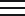

<section class="grid grid-cols-12 lg:px-[80px] md:px-[30px] px-[16px]">
  <div class="xl:col-span-4 lg:col-span-4 md:col-span-3 sm:col-span-3 col-span-6">
    <div class="lg:py-[42px] md:py-[30px] sm:py-[22px] py-[12px]">
      
    </div>
  </div>

  <div class="xl:col-span-4 lg:col-span-5 md:col-span-6 col-span-6">
    <div class="hidden sm:flex items-center justify-between lg:py-[59px] md:py-[40px] py-[28px] md:pl-0 pl-2">
      @for (link of headerLinks(); track link) {
        <span class="nav-item">
          <a class="desktop-links-nav greyScale-dark cursor-pointer">
            {{ link.label }}
          </a>
        </span>
      }
    </div>

    @if (isMobile) {
      <div class="sm:hidden flex justify-end items-center h-full" (click)="openMenu()">
        <div>
          
        </div>
      </div>
    }
  </div>

  <div class="xl:col-span-4 md:col-span-3 sm:col-span-3 col-span-12">
    <div class="hidden sm:flex justify-end items-center h-full">
      <button
        class="console-btn theme-button flex items-center justify-center gap-[10px] lg:px-[31px] md:px-[20px] px-[14px] lg:py-[16.5px] md:py-[12px] py-[10px] rounded-[60px] cursor-pointer"
      >
        
        <span class="links-button">Console</span>
        
      </button>
    </div>
  </div>
</section>

<!-- full-screen overlay menu (visible on small screens) -->
<div class="overlay w-full relative" [ngClass]="{ show: menuOpen }">
  <div class="flex flex-col justify-between w-full h-full">
    <div class="flex justify-between items-center w-full px-4 py-3 border-b border-[#E6E8EB]">
      
      <button class="close-button" (click)="closeMenu()" aria-label="Close Menu">✕</button>
    </div>

    <ul class="overlay-nav-list w-full bg-white">
      @for (link of headerLinks(); track link) {
        <li class="py-[25px] nav-item">
          <a (click)="closeMenu()" class="desktop-links-nav greyScale-dark">{{ link.label }}</a>
        </li>
      }
    </ul>

    <div class="px-5 pb-4 w-full">
      <button
        class="w-full theme-button flex items-center justify-center gap-[10px] px-[14px] py-[12px] rounded-[60px] cursor-pointer"
      >
        
        <span class="links-button">Console</span>
        
      </button>
    </div>
  </div>
</div>
